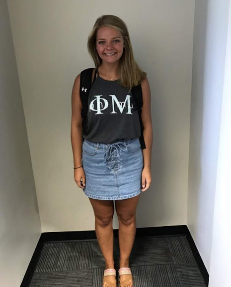

Hello, I'm Allie! I am a twenty-one year old Junior at Northwest Missouri State University. I'm an Interactive Digital Media: Visual Imaging major aspiring to become a User Interface Designer after I graduate in May 2020. I love running, hiking, reading a good book, and taking care of my many house plants. |
 |
Buffalo Wild Wings |
Server |
Student Success Center |
Office Assistant |
Alumni Relations |
Cat Caller |
Technological Skills |
Microsoft Suites, Adobe InDesign, Adobe Photoshop, Adobe Illistrator, Adobe Spark, Wireframing, HTML, CSS, JavaScript, jQuery, Slack, GitHub and Cloud 9 |
Northwest Missouri State University |
800 University Drive Maryville, MO 64468 Bachelor in Science of Interactive Digital Media: Visual Imaging Expected Graduation Date: May 2020 |
Jen Pitts |
Supervisor at the Student Success Center 660.541.4392 jpitts@nwmissouri.edu |
Starr Foote |
Supervisor at Buffalo Wild Wings 712.366.0067 |
Client Website |
|
Bi-Annual Greek Alumni Magazine |
|
Feel free to reach out if you have any questions, comments, or concerns.